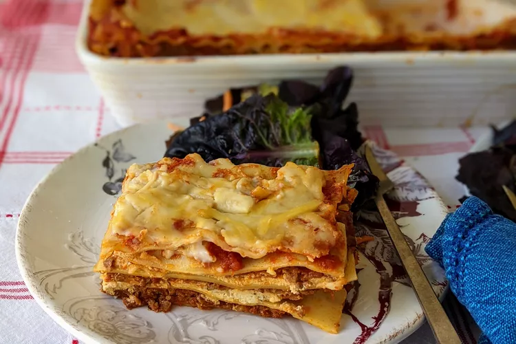

Lasagna

Homemade Lasagna Ingredients
This is my mom's special homemade lasagna recipe with a meaty, made-from-scratch tomato sauce and a deliciously
cheesy filling. A more traditional homemade lasagna filling would be made with ricotta but my mom's recipe calls
for a blend of small-curd cottage cheese and Parmesan. I have found none better anywhere. Serve with a leafy
green salad and crusty garlic bread.
These are the ingredients you'll need to make this top-rated homemade lasagna recipe:
- Meat: This lasagna recipe starts with a pound of ground meat (½ pound ground pork, ½ pound lean ground
beef).
- Onion: A diced onion is cooked until translucent with the ground meat.
- Canned tomatoes: You'll need a can of tomato sauce and a can of crushed tomatoes.
- Fresh herbs: For fresh flavor, chop two tablespoons of parsley and crush one clove of garlic.
- Spices and seasonings: This homemade lasagna is seasoned with dried basil, dried oregano, salt, and black
pepper.
- Noodles: Of course, you'll need lasagna noodles! This recipe calls for uncooked noodles, but you can use the
oven-ready variety to save time.
- salt and ground black pepper to taste
- Cheese: The cheese layer is made up of cottage cheese and Parmesan. You'll also need shredded mozzarella.
- Eggs: Eggs make the cheese layer extra creamy. Plus, they act as a binding agent (which means they hold the
layer together).
Steps to make Lasagna:
- Step 1
- Cook the meat: Cook the ground meat in a skillet until browned and crumbly. Add the onion and continue
cooking until it's translucent. Stir in the canned tomato products, half of the parsley, garlic, basil, 1.5
teaspoons of salt, oregano, and sugar.
- Step 2
- Cook the noodles: Boil the lasagna noodles in lightly salted water until they're al dente.
- Step 3
- Cook the noodles: Boil the lasagna noodles in lightly salted water until they're al dente.
- Step 4
- Assemble the lasagna: Layer the ingredients according to the recipe (starting with sauce and ending with
mozzarella) until the lasagna is assembled.
- Step 5
- Bake the lasagna: Cover with foil and bake in the preheated oven for about half an hour. Remove the foil and
continue baking until the top is golden brown.